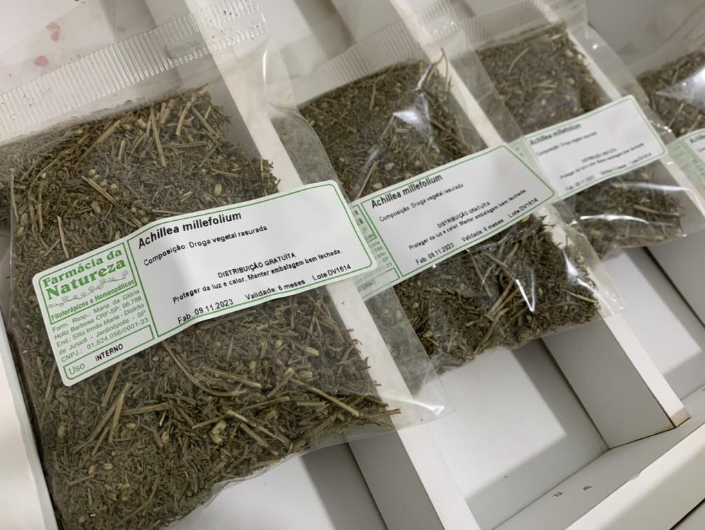

Exemplo de droga vegetal rasurada de Achillea millefolium

Fonte: Acervo pessoal. Autor: Fabio Carmona. Local: Farmácia da Natureza, Jardinópolis, SP, Brasil.
Embora seja classificada como droga vegetal, a planta inteira não é comumente utilizada na preparação de fitoterápicos, nem mesmo nas preparações caseiras. Alguns exemplos de uso de planta inteira incluem Echinacea spp., Eclipta prostrata e Phyllanthus niruri. Na maioria das espécies, os princípios ativos concentram-se em determinadas partes específicas da planta. Por exemplo, em Matricaria chamomilla, as flores concentram óleos essenciais e flavonoides (camazuleno, apigenina). Em outras situações, determinadas partes da planta podem conter maior concentração de substâncias tóxicas. Por exemplo, em Symphytum officinale, as raízes contêm maior concentração de alcaloides pirrolizidínicos, com risco de hepatotoxicidade (uso interno proibido).
É a droga vegetal fragmentada manualmente ou pelo uso de máquinas (Figura), muito utilizada para elaboração de preparações extemporâneas (infusos ou decoctos, ou “chás” medicinais, ou ainda os macerados). Também pode ser utilizada como ponto de partida para o preparo de extratos líquidos, semissólidos ou sólidos. Esta forma pode ser prescrita como monodroga ou associada a outras espécies vegetais.